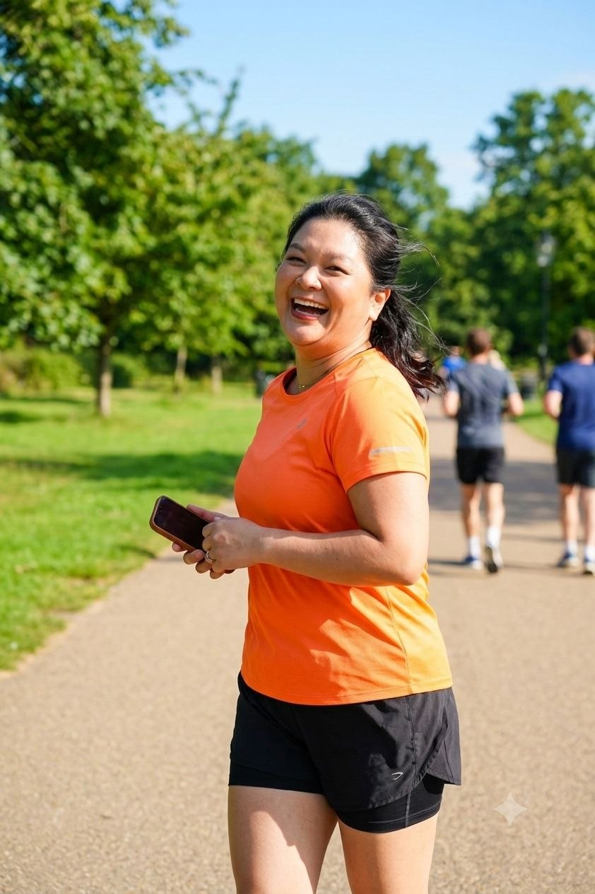

2ª edição São Paulo. Quatro quilômetros que você corre ou caminha, do seu jeito, junto com um monte de mulher que também empreende. Depois tem café, e é ali que as conversas acontecem.
- Quando
- Sábado, 26 de setembro de 2026, das 6h30 às 10h
- Onde
- Parque Villa Lobos · Av. Dra. Ruth Cardoso, 1230, Pinheiros, São Paulo
- Percurso
- 4 km, corrida ou caminhada
- Realização
- B2Mamy
O que vem no kit
- Camiseta personalizada da corrida
- Meia da Run Like a Mother
- Brindes das parceiras
Como é a manhã
- 6h30Credenciamento, entrega dos kits e aquecimento
- 7h30Largada da caminhada e da corrida
- 8h30Chegada das participantes e foto oficial
- 8h30 às 10hCafé e networking
- 10hEncerramento